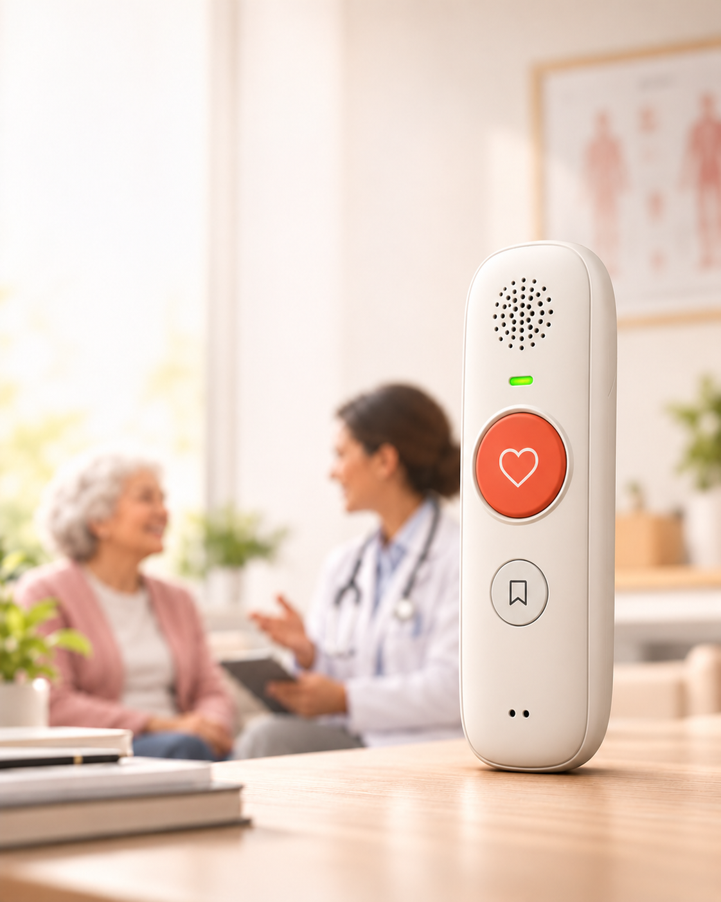
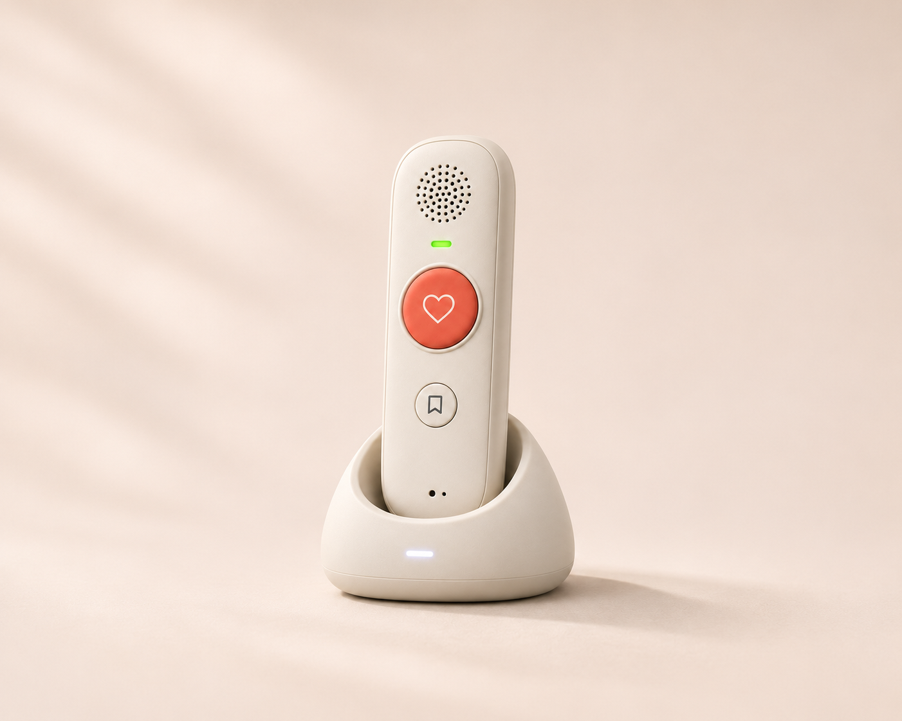

AT THE APPOINTMENT
So much to take in at once.
A new medication, an unfamiliar term, a follow-up to arrange. It’s a lot to absorb while also trying to ask the right questions.
A LITTLE CLOSER, EVEN FROM AFAR
Help your parents remember what their doctor said, hear their next steps, and keep the whole family informed.
Join the waitlistRecord the visit. Hear what matters. Stay connected.

SOUND FAMILIAR?
An appointment can leave your family with questions long after it ends. These moments may feel familiar.
AT THE APPOINTMENT
A new medication, an unfamiliar term, a follow-up to arrange. It’s a lot to absorb while also trying to ask the right questions.
BACK AT HOME
At home, details can blur. Your parent may remember the conversation but feel unsure about an instruction or when to follow up.
WHEN YOU CAN’T BE THERE
When you ask how the visit went, “It was fine” may leave you wondering what was discussed—and how you can best support them.
Illustrative scenes · Product concept
MEET RELAY HANDSET · HOW IT WORKS
01 — RECORD
Bring Relay along to the appointment. With everyone’s permission, press the large button to capture the conversation so your parent can focus on talking with their doctor.
02 — UNDERSTAND
The companion app turns the recording into key takeaways and next steps. Read the summary on the phone, or ask Relay to read it aloud.
03 — SHARE
From the app, the recording owner can email a summary to trusted family members, so everyone can start with the same information.
A CLOSER LOOK AT RELAY HANDSET
Easy to hold. Simple to use. Ready to revisit the conversation.

THE DEVICE
A portable, easy-to-hold recorder with a built-in speaker. The large button records the appointment; the small button lets them talk to Relay. The companion app keeps summaries, reminders, and family sharing together.
Relay connected
Recording ready to revisit
Review your clinician’s instructions
Check follow-up details
App concept preview · Illustrative content
THE COMPANION APP
Product and app concept previews · Large button: record. Small button: talk to Relay. Final design, connectivity, and phone compatibility will be announced.
A SUMMARY THEY CAN HEAR
For parents who would rather listen than read, Relay is designed to speak back. Press the small button to ask for the appointment summary, revisit a detail, or set a reminder in their own words.
“Can you read me the summary of my appointment?”
“What did we discuss about my follow-up?”
“Remind me tomorrow to book my follow-up.”
Illustrative requests for the planned voice experience. Standalone use is a development goal; internet requirements, reminder delivery, and supported questions are still being defined.
FOR BOTH SIDES OF THE PHONE CALL
LET’S MAKE THE NEXT VISIT A LITTLE EASIER
Be among the first to hear about Relay Handset.
For the moments you wish you could be there.
A FEW THINGS TO KNOW
Relay Handset is in development. Join the waitlist for product and availability updates. Pricing, launch timing, and phone compatibility haven’t been announced.
Yes. Ask everyone involved for permission before recording and follow the appointment provider’s recording policies.
No. AI summaries may miss details or contain errors. Check important information against your clinician’s instructions and ask your care team when something is unclear.
The planned voice experience lets parents ask Relay about a recorded visit and hear a spoken answer, alongside summaries in the app. Supported questions and availability are still being defined.
That is part of the planned experience: say what you want to remember, then have Relay help you revisit it later. Reminder timing, delivery through the device or app, and phone-connection requirements are still being defined.
Standalone recording and voice interaction are development goals, so a parent would not need to handle a phone for every interaction. The companion app would support reviewing, organizing, and sharing. Whether features require internet access, a nearby phone, or another connection is still being defined. Standalone use does not yet mean offline operation.
The large button is for recording the appointment. The small button is for talking to Relay—for example, asking to hear a summary or setting a reminder. The current images are product concepts; button symbols and final controls may change.
Sharing is designed to happen with the recording owner’s permission. Full recording privacy, storage, and retention details will be shared before the product launches.